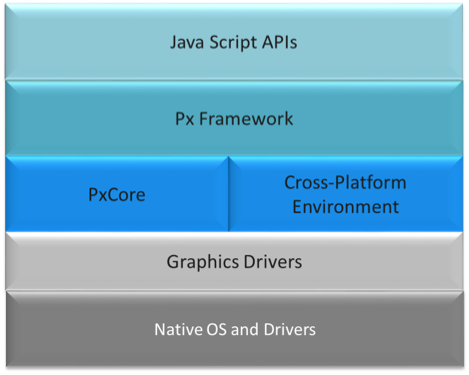

What is Spark?
Spark is a cross-platform application engine. It is a native C++ scene graph API exposed to a Javascript engine. It allows applications to be written in JavaScript to use native rendering functionality. The authored javascript has access to the Spark API for visual elements that are used for composition.
- supports rich animation and alpha masking primitives
- exposes a DOM-like programming model
- supports promises for asynchronous behaviors
- uses W3C event bubbling semantics
- allows for runtime logic to be in downloaded javascript, running on devices
Spark is built on top of a project called "pxCore". pxCore is a small lightweight library that provides a portable framebuffer and windowing abstraction for C++. Spark is a 2d scene graph API that defines a small set of atomic UI elements and exposes them with JavaScript wrappers. The result is a lightweight, portable application engine that can be used to build rich application experiences.
A high level representation of the runtime stack is below

The stack components.
- Native OS and graphic drivers - provides specific kernel, OS and UI services for the native system
- pxCore - provides UI scene and primitive components used by the px Framework to render components. Most of pxCore is creating using C++, with JavaScript bindings to its UI API.
- Cross-Platform Environment - provides asynchronous runtime services required by applications, such as http access, task scheduling, etc. The initial implementation is based on Node-JS and Chrome's V8 JavaScript engine. However, this may vary based on the target platform.
- px Framework - provides the public JavaScript API for creating reusable UI modules and applications, in addition to the facilities for loading and launching px-based application modules. Since the px Framework is just one example of what could be done with the pxCore library, its source can be found in the "examples" section of the pxCore GitHub Repository: examples/pxScene2d
Getting Started
To get started, download and install the Spark binary for your platform. Then follow the instructions to run a few simple Spark applications.
Go to Getting Started page
Getting StartedThe Spark Browser
Go to Getting Started page
The Spark Browserpx Framework
In order to use the px framework in JavaScript, the application must "import" the scene API to include the versioned API for Spark widgets. Spark disables the nodejs "require" keyword and instead provides "px.import" as an asynchronous loading mechanism for including modules in applications.
Read the px Framework documentation
px Framework DocumentationThe API
Spark provides atomic building blocks that can be composed into rich sets of components. Building an application is easy using the Spark API!
Spark's base widgets can be grouped to make more complex components. All visual widgets have a basic set of properties for onscreen positioning and dimensions. In addition, any widget type can act as a parent container for other widget types; the child widgets' positions will be relative to their parent's position.
The main parent container for widgets is called a "scene". When an application is started, a root scene is created as the parent for the application scene. Scenes can then create visual widgets or even other scenes to compose a full application experience.
Spark widgets are created in JavaScript by passing a property bag to the widget creation API:
scene.create({t:'scene', url:"http://pxscene.org/examples/px-reference/gallery/gallery.js"});
Each widget type has a unique set of properties, but all inherit a basic set of properties from the "object" type. We can construct a very simple "Hello World" application with just the following code:
scene.create({
t:"text", // Element type will be text
parent: scene.root, // Parent element
text:"Hello, World!", // the text
x:100, y:100, // position
textColor:0xff0000ff, // RGBA - red text
pixelSize:64}); // font height
The Hello World example will produce the example screen shown below.

The base widgets are as follows:
Read the detailed API documentation
API DocumentationConfiguration
Spark is ready to go "out of the box", but can be configured for some advanced settings, if needed. Settings currently supported include modifications to default window size and texture memory allowances.
Spark settings can be set either via the command line (when launching Spark) or through a configuration file. To use the configuration file, create a file called .sparkSettings.json in your Home directory. The configuration file will be in json format with key value pairs and will look something like this:
{"screenWidth":1280, "screenHeight":720}
| Options | Usage | Type | Default |
|---|---|---|---|
| screenWidth | Specifies the width of the Spark window in pixels | integer | 1280 |
| screenHeight | Specifies the height of the Spark window in pixels | integer | 720 |
| enableTextureMemoryMonitoring | Enables the monitoring of texture memory | boolean | false |
| textureMemoryLimitInMb | Specifies the maximum amount of texture memory Spark can occupy | integer | 85 MB |
| autoUpdateEdge | Allow the edge build to be automatically updated to the latest build. | boolean | true |
Under normal circumstances, Spark does not support the require keyword. However, by creating a file called .pxsceneEnableRequire in the HOME directory, some distributions of the Spark binary do support it.
Other Configuration Options
- Control logging level from Spark runtime: An environment variable called RT_LOG_LEVEL controls the debug logging level of the Spark runtime.
Valid values in order of greatest to least verbosity are as follows:
- debug
- info
- warn
- error
- fatal
Application Basics
Spark applications run in a browser-like environment. They have a DOM and leverage HTML5 paradigms like Promises and W3C event bubbling semantics; however, since they are not running in a browser, there are some differences and basics to keep in mind.
Read more on Application Basics
Application BasicsAdvanced Topics
When authoring Spark applications, there are many things to consider, such as caching and bundling applications and their resources. In addition, there are many Tips and Tricks that may be helpful when getting up and running with Spark for the first time.
Read more on Application Authoring
Advanced TopicsDebugging with VSCode
When developing applications, it is often necessary to be able to step through the code to debug an issue. VSCode provides a very nice environment for debugging Spark applications. The below steps have been verified and tested on OS X.
From within VSCode
- Download and install Visual Studio Code
- In Visual Studio Code use the File->Open menu to open the local directory where your Spark JavaScript application code resides, and select the file that you want to debug.
Note: Open the directory rather than just a single file; opening the directory will create a ./vscode subdirectory within your js directory, and this is needed for the debug configuration in step #3.
- Click on the debug icon in Visual Studio Code (along the left-hand side) and then click on the gear (top of the left-most panel) this should open a file called launch.json. Replace the contents of launch.json with the code block below.
NOTE: From VSCode 1.25 and greater ... it is necessary to include "protocol": "legacy", in launch.json.
// Reference // https://code.visualstudio.com/Docs/editor/debugging // https://github.com/Microsoft/vscode/issues/102 { "version": "0.2.0", "configurations": [ { "name": "DBG file in Spark", "type": "node", "request": "launch", "protocol": "legacy", "cwd": "/Applications/Spark.app/Contents/MacOS", "runtimeExecutable": "/Applications/Spark.app/Contents/MacOS/Spark", "args":["${file}"], "env" : { "LD_LIBRARY_PATH":"/Applications/Spark.app/Contents/MacOS/lib", "DYLD_LIBRARY_PATH":"/Applications/Spark.app/Contents/MacOS/lib" //,"BREAK_ON_SCRIPTSTART":1 } }, { "name": "DBG Spark", "type": "node", "request": "launch", "protocol": "legacy", "cwd": "/Applications/Spark.app/Contents/MacOS", "runtimeExecutable": "/Applications/Spark.app/Contents/MacOS/Spark", "env" : { "LD_LIBRARY_PATH":"/Applications/Spark.app/Contents/MacOS/lib", "DYLD_LIBRARY_PATH":"/Applications/Spark.app/Contents/MacOS/lib" //,"BREAK_ON_SCRIPTSTART":1 } }, { "name": "Attach Spark", "type": "node", "request": "attach", // TCP/IP address. Default is "localhost". "address": "localhost", // Port to attach to. "port": 5858, "sourceMaps": false } ] } - Go back to the file that you'd like to debug (click on the explorer icon top left-hand side). Set a breakpoint by clicking to the left of the appropriate source line.
- Go back to the debugger. Choose the "DBG Spark" configuration and then click the green "debug arrow". You should see the Spark application launch and in the browser url bar enter the file url that corresponds to the JavaScript file that you want to debug. Alternatively, choose the "DBG file in Spark" configuration, make sure the JavaScript file you want to launch is the focused file in the IDE, then click the green "debug arrow". This will launch the focused file directly without displaying the Spark browser url bar.
- You should now be able to set and hit breakpoints in the debugger. Note: If you have set environment variable BREAK_ON_SCRIPTSTART=1, execution will get stopped as the JavaScript file loads; otherwise, execution will stop at breakpoints only.
Attaching to a running instance of spark
Note: You must have started Spark with the --debug=5858 (5858 being the ip port specified in your .vscode/launch.json config file) command line option in order for this to work. eg. ./spark.sh --debug=5858
- Launch Spark as described above.
- Please set up your VSCode launch.json as described above. Then go to the debugger and choose the "Attach pxscene" config option, and click the debugger "green arrow".
- Within Spark enter the file URL of the JavaScript file that you want to debug.
- Within VSCode, navigate to the source for the JavaScript file that you want to debug. You should now be able to set and hit breakpoints.